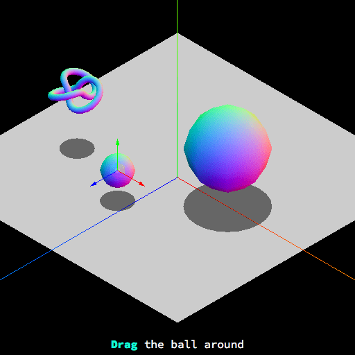
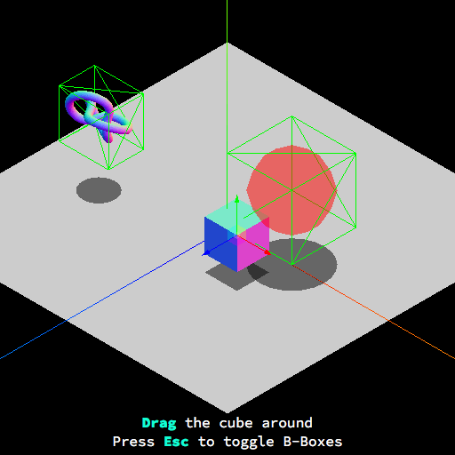

{{GamesSidebar}}
This article shows how to implement collision detection between bounding boxes and spheres using the Three.js library. It is assumed that before reading this you have read our 3D collision detection introductory article first, and have basic knowledge about Three.js.
Box3 and SphereThree.js has objects that represent mathematical volumes and shapes — for 3D AABB and bounding spheres we can use the Box3 and Sphere objects. Once instantiated, they have methods available to do intersection tests against other volumes.
To create a Box3 instance, we need to provide the lower and upper boundaries of the box. Usually we will want this AABB to be “linked” to an object in our 3D world (like a character.) In Three.js, Geometry instances have a boundingBox property with min and max boundaries for the object. Keep in mind that in order for this property to be defined, you need to manually call Geometry.computeBoundingBox beforehand.
var knot = new THREE.Mesh(
new THREE.TorusKnotGeometry(0.5, 0.1),
new MeshNormalMaterial({}));
knot.geometry.computeBoundingBox();
var knotBBox = new Box3(
knot.geometry.boundingBox.min,
knot.geometry.boundingBox.max);Note: The
boundingBoxproperty takes theGeometryitself as reference, and not theMesh. So any transformations such as scale, position, etc. applied to theMeshwill be ignored while computing the calculating box.
A more simple alternative that fixes the previous issue is to set those boundaries later on with Box3.setFromObject, which will compute the dimensions taking into account a 3D entity’s transformations and any child meshes as well.
var knot = new THREE.Mesh(
new THREE.TorusKnotGeometry(0.5, 0.1),
new MeshNormalMaterial({}));
var knotBBox = new Box3(new THREE.Vector3(), new THREE.Vector3());
knotBBox.setFromObject(knot);Instantiating Sphere objects is similar. We need to provide the sphere’s center and radius, which can be added to the boundingSphere property available in Geometry.
var knot = new THREE.Mesh(
new THREE.TorusKnotGeometry(0.5, 0.1),
new MeshNormalMaterial({}));
var knotBSphere = new Sphere(
knot.position,
knot.geometry.boundingSphere.radius);Unfortunately, there is no equivalent of Box3.setFromObject for Sphere instances. So if we apply transformations or change the position of the Mesh, we need to manually update the bounding sphere. For instance:
Box3 / SphereBoth Box3 and Sphere have a containsPoint method to do this test.
Box3 vs. Box3The Box3.intersectsBox method is available for performing this test.
Note: This is different from the
Box3.containsBoxmethod, which checks whether the Box3 fully wraps another one.
Sphere vs. SphereIn a similar fashion as before, there is a Sphere.intersectsSphere method to perform this test.
Sphere vs. Box3Unfortunately this test is not implemented in Three.js, but we can patch Sphere to implement a Sphere vs. AABB intersection algorithm.
// expand THREE.js Sphere to support collision tests vs Box3
// we are creating a vector outside the method scope to
// avoid spawning a new instance of Vector3 on every check
THREE.Sphere.__closest = new THREE.Vector3();
THREE.Sphere.prototype.intersectsBox = function (box) {
// get box closest point to sphere center by clamping
THREE.Sphere.__closest.set(this.center.x, this.center.y, this.center.z);
THREE.Sphere.__closest.clamp(box.min, box.max);
var distance = this.center.distanceToSquared(THREE.Sphere.__closest);
return distance < (this.radius * this.radius);
};We have prepared some live demos to demonstrate these techniques, with source code to examine.

BoxHelperAs an alternative to using raw Box3 and Sphere objects, Three.js has a useful object to make handling bounding boxes easier: BoxHelper (previously BoundingBoxHelper, which has been deprecated). This helper takes a Mesh and calculates a bounding box volume for it (including its child meshes). This results in a new box Mesh representing the bounding box, which shows the bounding box’s shape, and can passed to the previously seen setFromObject method in order to have a bounding box matching the Mesh.
BoxHelper is the recommended way to handle 3D collisions with bounding volumes in Three.js. You will miss sphere tests, but the tradeoffs are well worth it.
The advantages of using this helper are:
update() method that will resize its bounding box Mesh if the linked Mesh rotates or changes its dimensions, and update its position.Meshes that BoxHelper creates. By default they are created with a LineBasicMaterial material (a three.js material for drawing wireframe-style geometries).The main disadvantage is that it only creates box bounding volumes, so if you need spheres vs AABB tests you need to create your own Sphere objects.
To use it, we need to create a new BoxHelper instance and supply the geometry and — optionally — a color that will be used for the wireframe material. We also need to add the newly created object to the three.js scene in order to render it. We assume our scene variable to be called scene.
var knot = new THREE.Mesh(
new THREE.TorusKnotGeometry(0.5, 0.1),
new THREE.MeshNormalMaterial({})
);
var knotBoxHelper = new THREE.BoxHelper(knot, 0x00ff00);
scene.add(knotBoxHelper);In order to also have our actual Box3 bounding box, we create a new Box3 object and make it assume the BoxHelper’s shape and position.
If we change the Mesh position, rotation, scale, etc. we need to call the update() method so the BoxHelper instance matches its linked Mesh. We also need to call setFromObject again in order to make the Box3 follow the Mesh.
knot.position.set(-3, 2, 1);
knot.rotation.x = -Math.PI / 4;
// update the bounding box so it stills wraps the knot
knotBoxHelper.update();
box3.setFromObject(knotBoxHelper);Performing collision tests is done in the same way as explained in the above section — we use our Box3 object in the same way as described above.
There are two demos you can take a look at on our live demos page. The first one showcases point vs. box collisions using BoxHelper. The second one performs box vs. box tests.
